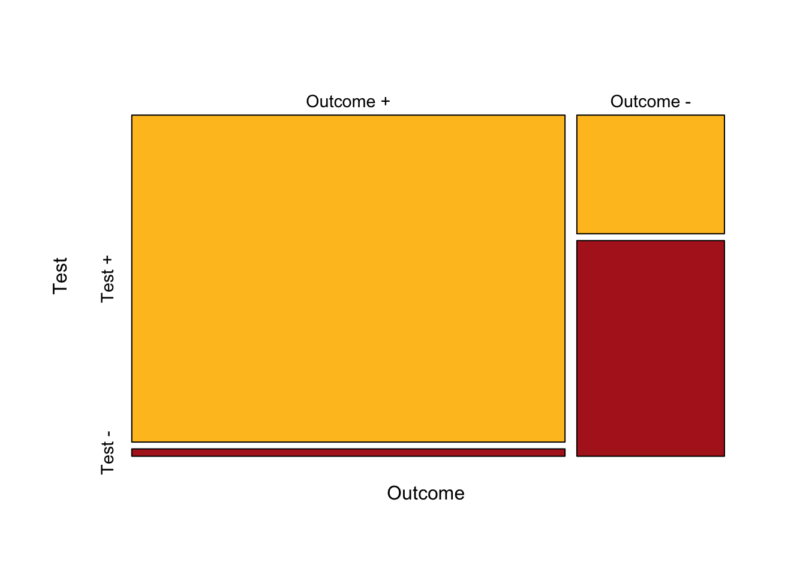
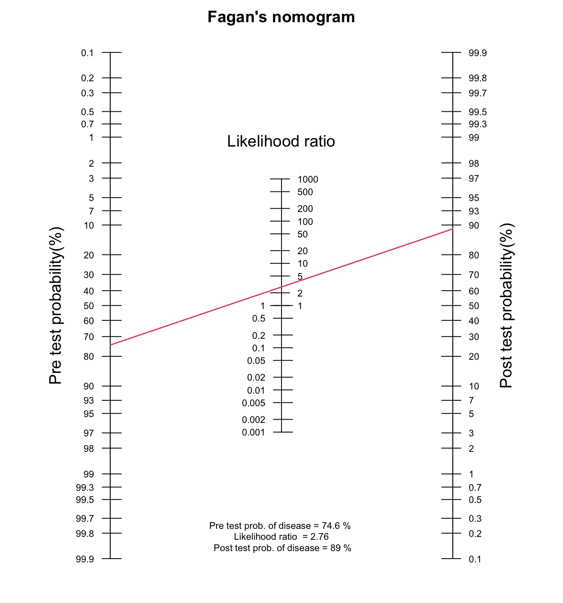
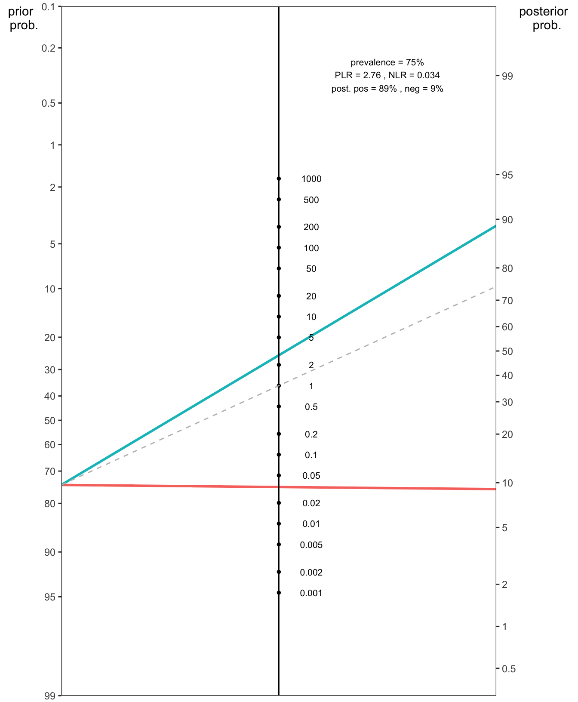
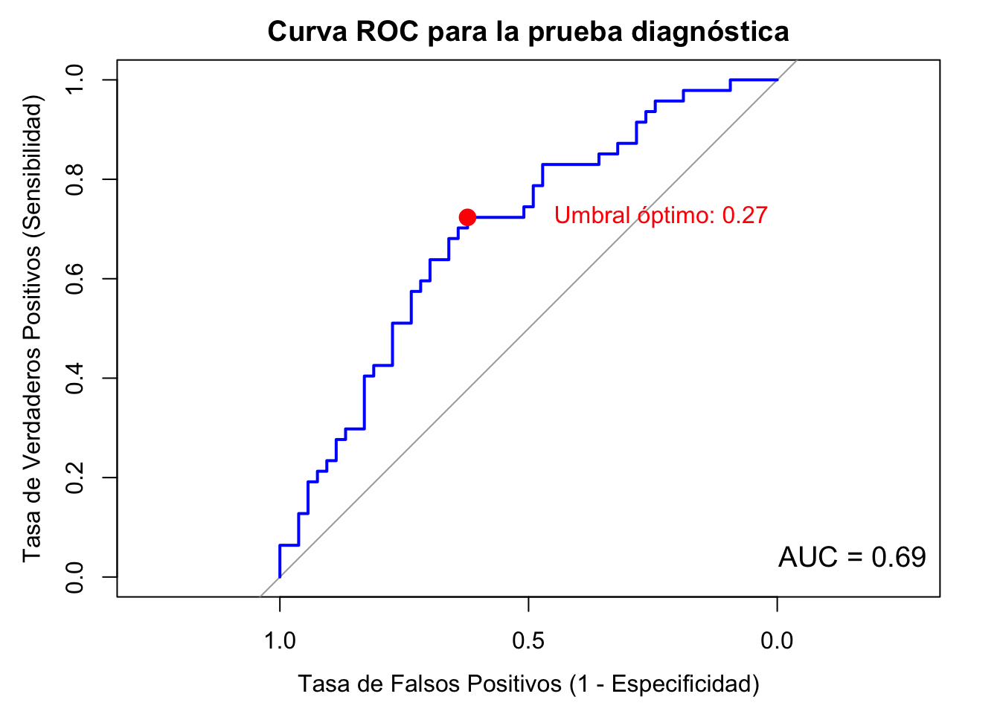
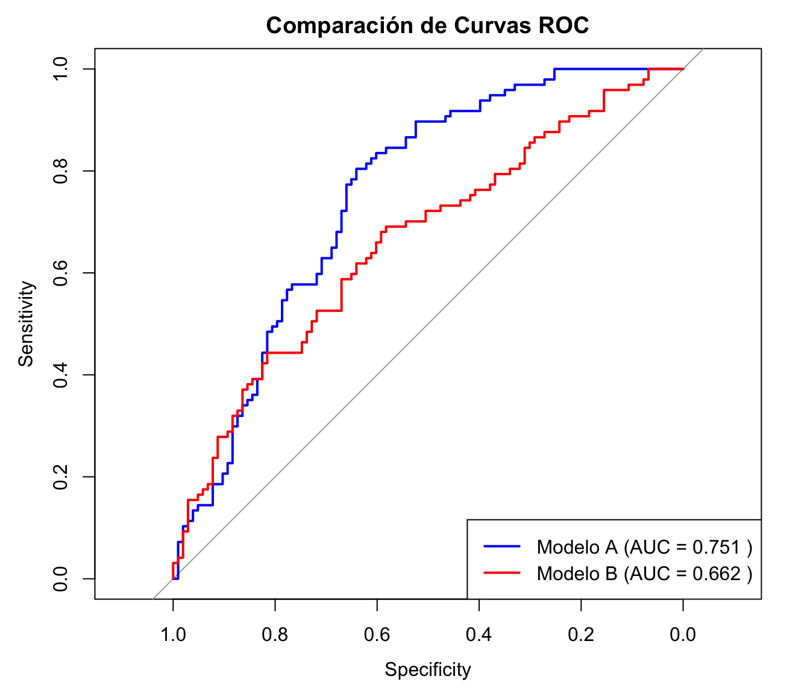
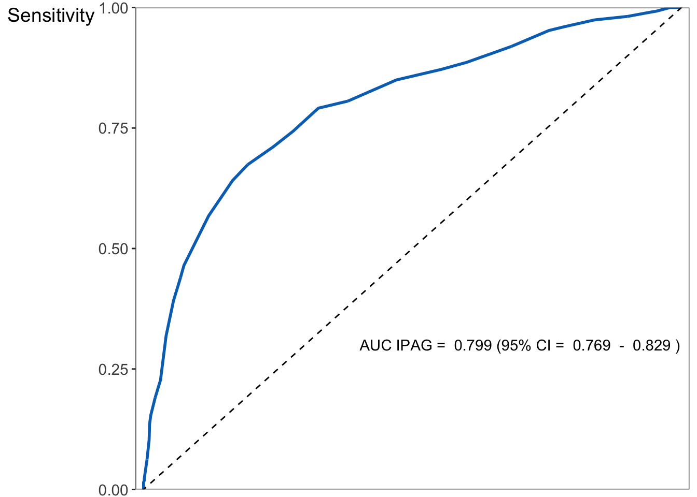
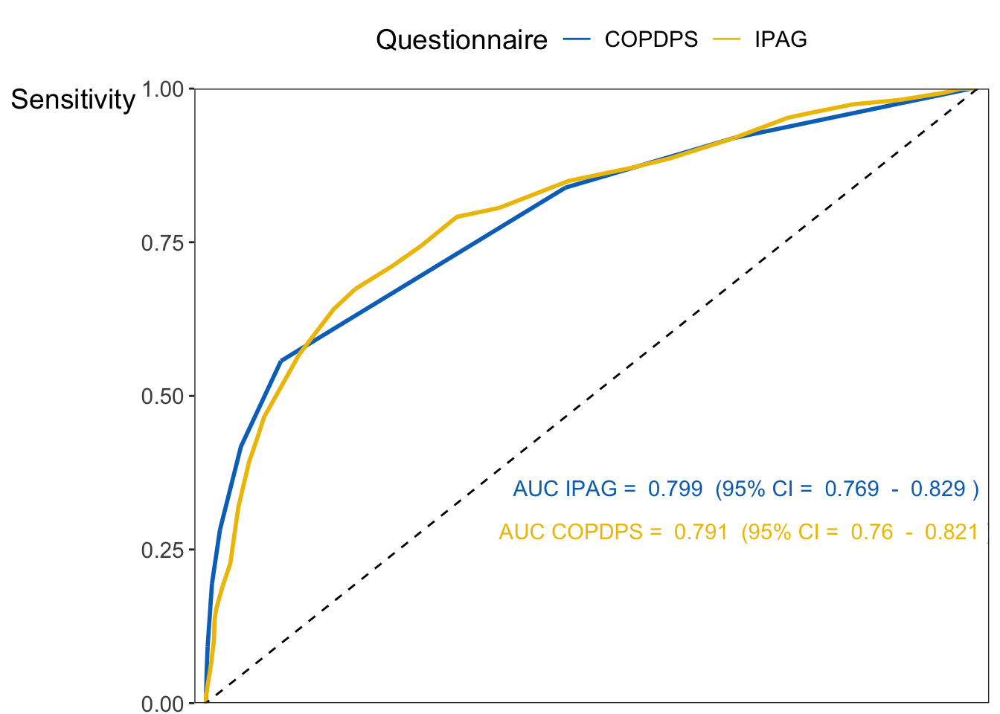

Cuando hayamos terminado este Capítulo, deberíamos ser capaces de:
- Calcular una variedad de medidas de precisión de las pruebas diagnósticas
- Estimar la probabilidad post-prueba utilizando el teorema de Bayes
- Comprender el Nomograma de Fagan
- Construir e interpretar una curva ROC
- Interpretar los resultados y redactarlos como en una revista científica de revisión por pares
1.1 Introducción
Las pruebas diagnósticas son necesarias para estimar la precisión de test y pruebas diagnósticas en la clínica médica.
Por ejemplo, gracias a métodos estadísticos propios del ámbito de la bioestadística podemos estimar la precisión diagnóstica de la mamografía digital (prueba índice) en la detección del cáncer de mama, utilizando la histopatología como “estándar de oro”, en mujeres mayores de 40 años. Así mismo podemos estimar la probabilidad post-prueba del cáncer de mama cuando la mamografía digital es positiva o negativa dado el conocimiento previo de una probabilidad de cáncer pre-prueba.
A lo largo del tema vamos a necesitar cargar los siguientes paquetes estadísticos: ggmosaic, epiR, pubh, TeachingDemos, scales, here y tidyverse. Si no los tenemos instalados, debemos instalarlos primero. Aquí hay un ejemplo de cómo instalar y cargar estos paquetes:
1.2 Test Diagnósticos en Tablas de contingencia 2x2
Generalmente, el estado de la enfermedad de un individuo es una variable dicotómica; el individuo tiene la enfermedad (\(Resultado+\)) o no tiene la enfermedad (\(Resultado-\)) según lo definido por el estándar de referencia (o “estándar de oro”). La prueba diagnóstica bajo evaluación (también denominada prueba índice) puede medirse con una variable dicotómica (por ejemplo, presencia o ausencia de anomalías mamarias mediante una mamografía) o una variable continua (por ejemplo, nivel de glucosa en ayunas para el diagnóstico de diabetes), que puede transformarse en una variable dicotómica eligiendo un valor de corte (umbral) óptimo que distinga los resultados de prueba positivos (\(Prueba+\)) de los negativos (\(Prueba-\))[1,2]
Si la prueba índice da un resultado dicotómico para cada participante en un estudio, los datos pueden tabularse en una tabla de 2 x 2 del resultado de la prueba (\(Prueba+\), \(Prueba-\)) frente al estado de la enfermedad “verdadero” (\(Resultado+\), \(Resultado-\)). Por ejemplo, el resultado de la mamografía digital para diagnosticar cáncer de mama comparado con la biopsia/cirugía de “estándar de oro” e histopatología en 1220 mujeres con sospecha de cáncer de mama son los siguientes:
Una tabla 2 × 2 que informa la clasificación cruzada de individuos por el resultado de la prueba índice y de referencia.
Resultado según el estándar de referencia
\(Resultado+\) (Enfermedad presente)
\(Resultado-\) (Enfermedad ausente)
Totales
Resultado de la prueba índice
\(Prueba+\)
VP=890
FP=110
VP+FP=1000
\(Prueba-\)
FN=20
VN=200
VN+FN=220
Totales
VP+FN=910
VN+FP=310
N=1220 (VP+VN+FP+FN)
donde
VP: verdadero positivo; prueba positiva y enfermedad presente (Prueba+ Resultado+)
La Sensibilidad (Se) de una prueba diagnóstica se refiere a la capacidad de la prueba para identificar correctamente a aquellos individuos con la enfermedad. Se define como la proporción de resultados de prueba verdaderos positivos entre los individuos que tienen la enfermedad [3].
Se = \(\frac{VP}{VP+FN}=\frac{890}{910}=0.978\) o \(97.8%\)
La Especificidad (Sp) de una prueba diagnóstica se refiere a la capacidad de la prueba para identificar correctamente a aquellos pacientes sin la enfermedad. Se define como la proporción de resultados de prueba verdaderos negativos entre los individuos que no tienen la enfermedad.
Sp = \(\frac{VN}{VN+FP}=\frac{200}{310}=0.645\) o \(64.5%\)
El Valor predictivo positivo (VPP) es la probabilidad de que los individuos con un resultado positivo en la prueba diagnóstica realmente tengan la enfermedad. Se define como la proporción de resultados de prueba verdaderos positivos entre los individuos que tienen una prueba positiva.
VPP = \(\frac{VP}{VP+FP}=\frac{890}{1000}=0.890\) o \(89.0%\)
El Valor predictivo negativo (VPN) es la probabilidad de que los individuos con un resultado negativo en la prueba diagnóstica estén realmente libres de la enfermedad. Se define como la proporción de resultados de prueba verdaderos negativos entre los individuos que tienen una prueba negativa.
VPN = \(\frac{VN}{VN+FN}=\frac{200}{220}=0.909\) o \(90.9%\)
1.2.2 La influencia de la prevalencia de la enfermedad en los valores predictivos
Los valores predictivos positivos y negativos están influenciados por la prevalencia de la enfermedad en la población que se está examinando. El uso de la misma prueba en una población con una mayor prevalencia (por ejemplo, mujeres mayores de 55 años) aumenta el valor predictivo positivo. Por el contrario, una mayor prevalencia da como resultado una disminución del valor predictivo negativo. Por lo tanto, al considerar los valores predictivos de las pruebas diagnósticas o de cribado, debemos tener en cuenta la influencia de la prevalencia de la enfermedad [4].
Y otras medidas diagnósticas útiles son las siguientes:
Más medidas de precisión diagnóstica
La Prevalencia aparente es la proporción de individuos con un resultado positivo en la prueba.
Prevalencia aparente = \(\frac{VP + FP}{N}=\frac{1000}{1220}=0.820\) o \(82.0%\)
La Prevalencia verdadera es la proporción de individuos que están realmente enfermos.
Prevalencia verdadera = \(\frac{VP + FN}{N}=\frac{910}{1220}=0.746\) o \(74.6%\)
La Razón de verosimilitud para un resultado de prueba positivo (RV+) es la verosimilitud (probabilidad) de que un individuo que tiene la enfermedad dé positivo dividida por la verosimilitud (probabilidad) de que un individuo que no tiene la enfermedad dé positivo. Se calcula como la sensibilidad dividida por 1 menos el valor de la especificidad [6].
La Razón de verosimilitud para un resultado de prueba negativo (RV-) es la probabilidad de que un individuo que tiene la enfermedad dé negativo dividida por la probabilidad de que un individuo que no tiene la enfermedad dé negativo. Se calcula como 1 menos la sensibilidad dividida por el valor de la especificidad.
La Precisión diagnóstica (eficacia), expresada como una proporción de sujetos clasificados correctamente (VP+VN) entre todos los sujetos (N). La precisión diagnóstica se ve afectada por la prevalencia de la enfermedad.
Precisión = \(\frac{VP + VN}{N}=\frac{890 + 200}{1220}=\frac{1090}{1220}= 0.893\) o \(89.3%\)%
Outcome
Test Outcome + Outcome -
Test + 890 110
Test - 20 200
epi.tests(tb1, digits=3)
Outcome + Outcome - Total
Test + 890 110 1000
Test - 20 200 220
Total 910 310 1220
Point estimates and 95% CIs:
--------------------------------------------------------------
Apparent prevalence * 0.820 (0.797, 0.841)
True prevalence * 0.746 (0.720, 0.770)
Sensitivity * 0.978 (0.966, 0.987)
Specificity * 0.645 (0.589, 0.698)
Positive predictive value * 0.890 (0.869, 0.909)
Negative predictive value * 0.909 (0.863, 0.944)
Positive likelihood ratio 2.756 (2.371, 3.204)
Negative likelihood ratio 0.034 (0.022, 0.053)
False T+ proportion for true D- * 0.355 (0.302, 0.411)
False T- proportion for true D+ * 0.022 (0.013, 0.034)
False T+ proportion for T+ * 0.110 (0.091, 0.131)
False T- proportion for T- * 0.091 (0.056, 0.137)
Correctly classified proportion * 0.893 (0.875, 0.910)
--------------------------------------------------------------
* Exact CIs
A partir de esta tabla de contingencia, podemos crear un gráfico de mosaico básico.
1.2.3 Gráfico de mosaico para una tabla 2x2
mosaicplot(t(tb1), col =c("goldenrod1", "firebrick"), cex.axis =0.9, main=NULL)

epi.tests(tb1, digits =3)
Outcome + Outcome - Total
Test + 890 110 1000
Test - 20 200 220
Total 910 310 1220
Point estimates and 95% CIs:
--------------------------------------------------------------
Apparent prevalence * 0.820 (0.797, 0.841)
True prevalence * 0.746 (0.720, 0.770)
Sensitivity * 0.978 (0.966, 0.987)
Specificity * 0.645 (0.589, 0.698)
Positive predictive value * 0.890 (0.869, 0.909)
Negative predictive value * 0.909 (0.863, 0.944)
Positive likelihood ratio 2.756 (2.371, 3.204)
Negative likelihood ratio 0.034 (0.022, 0.053)
False T+ proportion for true D- * 0.355 (0.302, 0.411)
False T- proportion for true D+ * 0.022 (0.013, 0.034)
False T+ proportion for T+ * 0.110 (0.091, 0.131)
False T- proportion for T- * 0.091 (0.056, 0.137)
Correctly classified proportion * 0.893 (0.875, 0.910)
--------------------------------------------------------------
* Exact CIs
1.2.4 Teoremas de Probabilidad Total, Bayes y Valores predictivos o Probabilidad a Posteriori
Cuando se trata de un paciente individual, las medidas importantes no son la sensibilidad o la especificidad, sino los valores predictivos. Estos nos dicen la probabilidad de que un paciente con un resultado positivo (o negativo) en la prueba realmente tenga (o no tenga) la enfermedad. La clave para responder esta pregunta está en el teorema de Bayes. Primero vamos a definir algunos términos y luego proporcionamos una breve revisión del teorema de Bayes.
Probabilidad previa (sinónimos: probabilidad pre-prueba, prevalencia) es la probabilidad de que el paciente tenga la enfermedad antes de una prueba diagnóstica particular. Combina todo el conocimiento sobre el paciente, incluida la historia del paciente, los hallazgos físicos, los resultados de pruebas diagnósticas previas y la prevalencia de la enfermedad en la población.
Probabilidad a posteriori (probabilidad post-prueba, valor predictivo) es la probabilidad de enfermedad después de una prueba diagnóstica particular, que tiene en cuenta tanto la probabilidad previa como los resultados de la prueba.
Teorema de Bayes Si A1, A2, …, y An son n eventos mutuamente excluyentes y exhaustivos, de modo que \[P(A1 \cup A2 \cup \dots \cup A_{n}) = P(A1)+P(A2)+\dots+P(A_{n}) = 1\] Entonces el teorema de Bayes establece \[P(A_{i} | B) = \frac{P(B | A_{i})P(A_{i})}{P(B | A1)P(A1) + \dots + P(B | A_{n})P(A_{n})}\] para cada i, \(1 \le i \le n\).
En un entorno clínico, a menudo hay n = 2 eventos, como “enfermo” y “no enfermo”. La utilidad del teorema de Bayes radica en su capacidad para invertir las condiciones. Por ejemplo, calcular P(D+ \(|\) T+) a partir de P(T+ \(|\) D+) (la condición se invierte), aquí T+ = B y D+ = A1 en el teorema de Bayes.
En otras palabras, la probabilidad de que un paciente con un resultado positivo en la prueba esté realmente enfermo se puede calcular a partir de la probabilidad de que un paciente con la enfermedad tenga un resultado positivo en la prueba. Esto último es la sensibilidad de la prueba diagnóstica. Ahora la conexión entre nuestra pregunta sobre el estado de la enfermedad del paciente y las características de la prueba queda clara.
La pregunta se puede expresar matemáticamente:
\(P (D+ | T+) =\) Probabilidad de que un paciente con un resultado positivo en la prueba realmente tenga la enfermedad. Esto se denomina el valor predictivo de una prueba positiva o valor predictivo positivo (VPP) y \(P (D- | T-) =\) Probabilidad de que un paciente con un resultado negativo en la prueba realmente no tenga la enfermedad. Esto se denomina el valor predictivo de una prueba negativa o valor predictivo negativo (VPN)
\(P(D+)=\) Probabilidad de que el paciente tenga la enfermedad antes de la prueba – probabilidad previa, (prevalencia, probabilidad pre-prueba) \(P (D-) = 1 - P (D+),\)\(P (T+ | D+) =\) Probabilidad condicional de verdadero positivo, sensibilidad, \(P (T- | D-) =\) Probabilidad condicional de verdadero negativo, especificidad, \(P (T+ | D-) =\) Probabilidad condicional de falso positivo = 1 - especificidad, \(P (T- | D+) =\) Probabilidad condicional de falso negativo = 1 – sensibilidad.
Todos los términos en las ecuaciones (1) y (2) son necesarios. Excepto por la prevalencia, todos los demás términos están asociados con la prueba diagnóstica en sí. Los médicos juzgan la prevalencia probable (probabilidad pre-prueba) de la enfermedad en cuestión (para un grupo de pacientes con características similares al paciente particular que tienen delante) y aplican la sensibilidad y especificidad conocidas de la prueba diagnóstica (de estudios de investigación) para obtener la probabilidad post-prueba del paciente particular de tener la enfermedad en cuestión.
Los intervalos de confianza para la sensibilidad, la especificidad y los valores predictivos se pueden calcular mediante los métodos habituales para proporciones binomiales. A menudo, los métodos basados en la aproximación normal a la distribución binomial (por ejemplo, IC del 95%: p \(\pm\) 1.96 \(\sqrt{(pq/N)}\)) serán inexactos debido a su simetría, y los métodos exactos u otras aproximaciones serán mejores, como por ejemplo binom.test y fisher.test en R.
La razón de verosimilitud (RV), junto con la sensibilidad y la especificidad, puede considerarse una propiedad de la propia prueba que no cambia con la prevalencia de la enfermedad.
En nuestro ejemplo, RV+ = 2.756, lo que significa que un resultado positivo en la mamografía digital es aproximadamente 2.8 veces más probable de ser un verdadero positivo que un falso positivo.
De manera similar, RV- = 0.034, lo que significa que un resultado negativo en la mamografía digital es aproximadamente 0.034 veces más probable de ser un falso negativo que un verdadero negativo. Esto también puede interpretarse como: una mujer sin cáncer de mama tiene aproximadamente 29.4 (= 1/0.034) veces más probabilidades de tener un resultado negativo en la mamografía digital que una mujer con cáncer de mama.
En la práctica clínica, una RV+ más alta es deseable para las pruebas utilizadas para “confirmar” una enfermedad, mientras que una RV- más baja es preferible para las pruebas utilizadas para “descartar” la posibilidad de que el individuo tenga la enfermedad.
1.2.6 Aplicación de las RV (revisando la probabilidad de enfermedad)
Primero necesitamos recordar la definición de odds.
Odds es una razón de probabilidades. Para ser coherentes con la primera sección, sea D+ el evento de que un paciente tiene una enfermedad particular y T el resultado de la prueba (puede ser T+ o T-). La probabilidad de que el paciente tenga la enfermedad es P(D+) y de no tener la enfermedad es P(D-). Entonces, el odds a favor de la enfermedad es la razón de la probabilidad de tener la enfermedad a la probabilidad de no tener la enfermedad
\(Odds\) a favor de la enfermedad = \(P(D+) / P(D-)\).
A diferencia de la probabilidad, el odds no necesita estar entre 0 y 1. Puede ser cualquier número no negativo.
La razón de verosimilitud es una razón de probabilidades condicionales de tener los resultados de la prueba (condicionadas a los escenarios de tener la enfermedad y no tener la enfermedad), una forma alternativa de evaluar el rendimiento de una prueba diagnóstica.
Si P(D+) es la probabilidad previa, entonces el odds definido anteriormente es el odds previo. De manera similar, la razón de probabilidades posteriores se denomina odds posterior. A partir de este punto, omitiremos la frase “a favor de la enfermedad”. A menos que se indique lo contrario, el odds se refiere al odds a favor de la enfermedad.
\(\text{odds posterior = odds previo} \times \text{razón de verosimilitud}\).
La razón por la que agregamos deliberadamente el concepto de razón de verosimilitud es para relacionar directamente la sensibilidad y la especificidad con el odds posterior, a partir del cual se puede calcular la probabilidad posterior. La razón de verosimilitud modifica el odds previo en odds posterior. La cantidad en que cambiarán los odds depende de la precisión (sensibilidad y especificidad) de la prueba.
Evalúa cuánto más probable es que ocurra un resultado negativo en una persona sin la enfermedad que en una persona con la enfermedad.
Una vez que conocemos el odds previo, la calidad de la prueba y el resultado de la prueba, el odds posterior se puede obtener de la ecuación anterior, y por lo tanto se puede estimar la probabilidad posterior.
Las razones de verosimilitud positivas (RV+) corresponden a las pendientes de la curva ROC (se discutirá a continuación). La pendiente de la curva ROC representa el cambio en la sensibilidad por un cambio infinitesimal en el porcentaje de falsos positivos.
1.2.7 Probabilidad post-prueba y el Nomograma de Fagan
El Nomograma de Fagan es una herramienta gráfica que utiliza las razones de verosimilitud para estimar la probabilidad post-prueba de una enfermedad dada una probabilidad pre-prueba y el resultado de una prueba diagnóstica. Fue desarrollado por el Dr. Terry Fagan en la década de 1970 y es ampliamente utilizado en medicina clínica para ayudar a los médicos a interpretar los resultados de las pruebas diagnósticas. Para calcular la probabilidad post-prueba sin utilizar el teorema de Bayes directamente, podemos usar el Nomograma de Fagan. El nomograma de Fagan nos permite convertir las probabilidades pre-prueba en probabilidades post-prueba sin necesidad de usar odds.
El odds pre-prueba se computa a partir de la probabilidad pre-prueba (prevalencia) utilizando la fórmula: \(odds \ pre \text{-} prueba = \frac{probabilidad \ pre \text{-} prueba}{1 - probabilidad \ pre \text{-} prueba}\)
El odds pre-prueba de un diagnóstico particular, multiplicado por la razón de verosimilitud de la prueba diagnóstica, determina el odds post-prueba.
Por lo tanto, \(odds \ post \text{-} prueba = RV \times odds \ pre \text{-} prueba\)
El odds post-prueba proporcionan una estimación actualizada del odds de que el paciente tenga la condición o enfermedad después de tener en cuenta el resultado de la prueba diagnóstica. Si el resultado de la prueba es positivo, usamos la RV+ para este cálculo. Si el resultado de la prueba es negativo, usamos la RV- en su lugar. En ambos escenarios, el odds se refiere al odds a favor de que la enfermedad esté presente.
La probabilidad post-prueba se puede derivar del odds post-prueba utilizando la fórmula: \(probabilidad \ post \text{-} prueba = \frac{odds \ post \text{-} prueba}{odds \ post \text{-} prueba + 1}\)
La RV se utiliza comúnmente en la toma de decisiones basada en el Teorema de Bayes. La RV+ nos dice cuánto aumentan los odds de que la condición o enfermedad esté presente dado un resultado positivo en la prueba.
RV+ mayor que 1: Aumenta los odds post-prueba.
RV+ de 1: No hay cambio en los odds post-prueba (los odds post-prueba son iguales a los odds pre-prueba).
El nomograma suele consistir en tres escalas paralelas que representan la probabilidad pre-prueba, la razón de verosimilitud y la probabilidad post-prueba. Podemos estimar visualmente la probabilidad post-prueba de un resultado de diagnóstico positivo trazando una línea desde la probabilidad pre-prueba conocida, a través de la RV+ y leyendo la probabilidad post-prueba.
Supongamos que la prevalencia (probabilidad pre-prueba) de cáncer de mama en una población específica de mujeres mayores de 40 años es del 74.6%. ¿Cuál es la probabilidad post-prueba de cáncer de mama para esta población cuando la mamografía digital es positiva?
En R:
fagan.plot(probs.pre.test =0.746, LR =2.756)

Figure 1.1: El impacto de un resultado positivo de mamografía digital con una RV+ de 2.76 en la probabilidad post-prueba de una paciente para cáncer de mama, partiendo de una probabilidad pre-prueba inicial del 78% en el Nomograma de Fagan.
La RV- nos dice cuánto disminuyen los odds de que la condición o enfermedad esté presente dado un resultado negativo en la prueba.
RV- menor que 1: Disminuye los odds post-prueba.
RV- de 1: No hay cambio en la probabilidad (los odds post-prueba son iguales a los odds pre-prueba).
¿Cuál es la probabilidad post-prueba de cáncer de mama para la misma población cuando la mamografía digital es negativa?
\(odds \ post \text{-} prueba = RV\text{-} \times odds \ pre \text{-} prueba = 0.034 \times 3.55 = 0.1207\)
La odds post prueba es 0.1207. Para convertir esto en probabilidad post-prueba, usamos la fórmula que se deriva facilmente de la definición de odds: \(odds = \frac{probabilidad}{1 - probabilidad}\), entonces \(probabilidad = \frac{odds}{odds + 1}\)
\(probabilidad \ post \text{-} prueba = \frac{odds \ post \text{-} prueba}{odds \ post \text{-} prueba + 1} = \frac{0.1207}{0.1207 + 1} = \frac{0.1207}{1.1207} = 0.1077 \ o \ 10.77%\)
En R:
fagan.plot(probs.pre.test =0.746, LR =0.034)
Figure 1.2: El impacto de un resultado negativo de mamografía digital con una RV- de 0.034 en la probabilidad post-prueba de una paciente para cáncer de mama, partiendo de una probabilidad pre-prueba inicial del 74.6% en el Nomograma de Fagan.
También podemos usar las funciones epi.nomogram() y nomogrammer() que nos permiten calcular la probabilidad post-prueba y trazar nomogramas de Fagan con {ggplot2}, respectivamente:
epi.nomogram(se =NA, sp =NA, lr =c(2.756, 0.034),pre.pos =0.746,verbose =FALSE)
Given a positive test result, the post-test probability of being outcome positive is 0.89
Given a negative test result, the post-test probability of being outcome positive is 0.09
# nomogrammer es una función de R que crea un nomograma de Fagansource("nomogrammer.r")nomogrammer(Prevalence =0.746,Plr =2.756,Nlr =0.034,Detail =TRUE,NullLine =TRUE)

Figure 1.3: El impacto de un resultado positivo (línea azul) y negativo (línea roja) de mamografía digital con una RV+ de 2.756 y una RV- de 0.034 en la probabilidad post-prueba de una paciente para cáncer de mama, respectivamente, partiendo de una probabilidad pre-prueba inicial del 74.6% en el Nomograma de Fagan. La línea gris discontinua que va desde la probabilidad previa a través de RV = 1 ilustra la probabilidad posterior si se mantuviera sin cambios.
1.3 Receiver Operating Characteristic (ROC) curve
Cuando el resultado de una prueba diagnóstica se mide en una escala continua, la sensibilidad y la especificidad varían con diferentes puntos de corte (umbrales). Por lo tanto, debe seleccionarse un punto de corte conveniente para calcular las medidas de precisión diagnóstica de la prueba. El análisis de la curva de la característica operativa del receptor (ROC) puede utilizarse para ayudar en esta decisión [2].
Puede encontrar los siguientes sitios web útiles al estudiar las curvas ROC:
Es deseable que una prueba diagnóstica tenga alta sensibilidad y también alta especificidad. En otras palabras, nos gustaría que el resultado de la prueba se acercara lo más posible a lo ideal: un resultado positivo significa “enfermo” y un resultado negativo significa “no enfermo”. Desafortunadamente, existe una compensación entre sensibilidad y especificidad: a medida que la sensibilidad aumenta, la especificidad disminuye, y viceversa. La relación entre sensibilidad y especificidad en una prueba diagnóstica es análoga a la relación entre el error tipo I y el error tipo II en las pruebas de hipótesis.
Una curva ROC es una representación gráfica que muestra la capacidad diagnóstica de una prueba, o sistema de clasificación binaria, al variar su umbral de discriminación. La curva traza la Tasa de Verdaderos Positivos (TVP) frente a la Tasa de Falsos Positivos (TFP) en distintos umbrales. La TVP también se conoce como sensibilidad, y la TFP se calcula como 1 - especificidad.
Sensibilidad (TVP): La proporción de casos positivos reales que son correctamente identificados.
Una prueba diagnóstica continua proporciona una puntuación numérica. Para cada valor de puntuación posible, se establece un umbral.
Los puntos de datos con puntuaciones por encima del umbral se clasifican como “positivos”, y aquellos por debajo se clasifican como “negativos”.
Para cada umbral, se calculan la sensibilidad y la especificidad (y por lo tanto, la TFP).
Estos pares (TFP, Sensibilidad) se grafican. Una curva continua se forma al conectar estos puntos.
Una prueba perfecta tendría un punto en la esquina superior izquierda del gráfico, con una sensibilidad de 1 y una TFP de 0. Esto significa que tiene una tasa de verdaderos positivos del 100% y una tasa de falsos positivos del 0%. Una prueba inútil seguiría la línea diagonal de (0,0) a (1,1), lo que significa que su capacidad para distinguir entre casos positivos y negativos no es mejor que el azar.
1.3.2 Interpretación del AUC
El AUC (Area Under the Curve o Área Bajo la Curva) es un valor escalar único que representa el rendimiento diagnóstico general de una prueba. Es el área debajo de la curva ROC, con un rango de 0 a 1. Un valor de AUC más alto indica una prueba con mejor rendimiento.
AUC = 1.0: Prueba perfecta. Distingue perfectamente entre casos positivos y negativos.
AUC \(\ge\) 0.9: Prueba excelente. Muy precisa en sus predicciones.
0.8 \(\le\) AUC < 0.9: Prueba buena. Generalmente considerada una herramienta diagnóstica útil y confiable.
0.7 \(\le\) AUC < 0.8: Prueba aceptable/regular. Tiene algún valor diagnóstico, pero con una mayor probabilidad de errores de clasificación.
0.6 \(\le\) AUC < 0.7: Prueba deficiente. Valor diagnóstico limitado.
AUC = 0.5: Prueba inútil. Las predicciones no son mejores que el azar (como lanzar una moneda).
El área bajo la curva ROC mide la discriminación, es decir, la capacidad de la prueba para clasificar correctamente a aquellos con y sin la enfermedad. Supongamos que conocemos el estado de cada paciente con respecto a la enfermedad. El área bajo una curva ROC es la proporción de pares de pacientes seleccionados aleatoriamente (uno enfermo, uno no enfermo) que son correctamente clasificados (ordenados) por la prueba. El área bajo la curva ROC es una medida global de la precisión de la prueba. Alternativamente, el área bajo la curva ROC puede interpretarse como la sensibilidad promedio en todas las posibles especificidades.
Las curvas ROC se utilizan en muchas otras situaciones además de las pruebas de diagnóstico clínico; una de ellas es la evaluación de la adecuación de un modelo de regresión logística, por ejemplo. Existen muchas herramientas de software para el análisis ROC, utilizando lenguajes de una variedad de áreas de contenido. Los métodos habituales para las pruebas de diagnóstico clínico se basan en el artículo clásico: Hanley JA, McNeil BJ. The meaning and use of the area under the receiver operating characteristic (ROC) curve. Radiology 1982; 143: 29-36[7].
1.3.3 Encontrar un Punto de Corte Apropiado
El punto más cercano a la esquina superior izquierda de la curva ROC a veces se elige como punto de corte porque optimiza la sensibilidad y la especificidad. Sin embargo, la tarea de encontrar un punto de corte apropiado a veces es más complicada y requiere juicio clínico. Deben tenerse en cuenta factores como el costo y el beneficio. Por ejemplo, cuando el costo de un resultado falso positivo es alto (como una cirugía innecesaria), queremos que la prueba sea más específica (alta especificidad); cuando la situación se invierte, queremos que la prueba sea más sensible (alta sensibilidad).
El índice de Youden es una métrica comúnmente utilizada para encontrar el punto de corte óptimo en una curva ROC. Se define como: \[J = Sensibilidad + Especificidad - 1\] El índice de Youden varía entre 0 y 1, donde 1 indica una prueba perfecta (sensibilidad y especificidad ambas iguales a 1), y 0 indica una prueba que no tiene valor diagnóstico (sensibilidad y especificidad ambas iguales a 0.5). El punto de corte que maximiza el índice de Youden es a menudo considerado como el punto óptimo, ya que equilibra la sensibilidad y la especificidad.
El paquete pROC en R proporciona una función conveniente coords() para encontrar el punto de corte óptimo basado en varios criterios, incluido el índice de Youden. En R puedes usar el siguiente código para encontrar el punto de corte óptimo:
library(pROC)set.seed(123) # para reproducibilidad# 1. Simulación de datos# Estado real de los sujetos (0 = control, 1 = caso)true_status <-rbinom(100, 1, 0.5)# Puntuaciones para la prueba diagnóstica# Los casos (true_status = 1) tienen puntuaciones más altas en promedioscores <-rnorm(100, mean =ifelse(true_status ==1, 1, 0), sd =1)# 2. Creación y cálculo de la curva ROC# 'roc' crea el objeto de la curva ROCroc_obj <-roc(true_status, scores)# 3. Visualización y análisis# Graficar la curva ROC con un título más descriptivoplot(roc_obj,main ="Curva ROC para la prueba diagnóstica",xlab ="Tasa de Falsos Positivos (1 - Especificidad)",ylab ="Tasa de Verdaderos Positivos (Sensibilidad)",col ="blue", # Color de la línealwd =2) # Grosor de la línea# Calcular y mostrar el valor del Área Bajo la Curva (AUC)auc_value <-auc(roc_obj)legend("bottomright",legend =paste("AUC =", round(auc_value, 2)),bty ="n", # Sin caja alrededor de la leyendacex =1.2)# 4. Encontrar y graficar el punto de corte óptimo# Encontrar las coordenadas del punto de corte óptimo usando el índice de Youdenoptimal_coords <-coords(roc_obj, "best", ret =c("specificity", "sensitivity", "threshold"), best.method ="youden")optimal_specificity <- optimal_coords["specificity"]optimal_sensitivity <- optimal_coords["sensitivity"]optimal_threshold <- optimal_coords["threshold"]# Graficar el punto óptimo en la curvapoints(x = optimal_specificity, y = optimal_sensitivity, col ="red", pch =19, cex =1.5)# Añadir una etiqueta al punto óptimotext(x =1- optimal_specificity +0.1, y = optimal_sensitivity,labels =paste("Umbral óptimo:", round(optimal_threshold, 2)),pos =4, # Posición del texto (a la derecha)col ="red")

# Mostrar los valores del punto de corte óptimoprint("Valores del punto de corte óptimo (índice de Youden):")
[1] "Valores del punto de corte óptimo (índice de Youden):"
La prueba de DeLong es una prueba no paramétrica ampliamente utilizada para comparar el Área Bajo la Curva (AUC) de dos o más curvas ROC (Receiver Operating Characteristic) correlacionadas. Es particularmente valiosa cuando tienes, por ejemplo, múltiples pruebas de diagnóstico aplicadas al mismo conjunto de pacientes y quieres ver si el rendimiento de una prueba (medido por el AUC) es significativamente mejor que el de otra. El paquete pROC proporciona una implementación conveniente de la prueba de DeLong [8].
1.4.1 Base matemática de la prueba de DeLong
La prueba de De Long se basa en la teoría de las U-estadísticas. Esencialmente, calcula la covarianza entre los AUC empíricos de dos (o más) curvas ROC. Esta covarianza es crucial porque al comparar curvas ROC correlacionadas (por ejemplo, de los mismos sujetos), se viola el supuesto de independencia requerido por pruebas más simples.https://www.jstor.org/stable/2531595
Aquí tienes un resumen simplificado de las ideas matemáticas clave:
AUC como U-estadística: El AUC puede expresarse como una U-estadística. Para una sola curva ROC generada a partir de un conjunto de \(n\) sujetos enfermos (casos) y \(m\) sujetos no enfermos (controles), el AUC es una medida de la probabilidad de que un sujeto enfermo elegido al azar tenga una puntuación de prueba más alta que un sujeto no enfermo elegido al azar.
Sean \(X_i\) las puntuaciones de la prueba para sujetos no enfermos (\(i=1, \dots, n\)) y \(Y_j\) las puntuaciones de la prueba para sujetos enfermos (\(j=1, \dots, m\)).
El AUC empírico, a menudo calculado usando la regla trapezoidal, puede expresarse formalmente en términos de pares de observaciones:
\[\text{AUC} = \frac{1}{nm} \sum_{i=1}^{n} \sum_{j=1}^{m} \mathbb{I}(Y_j > X_i) + \frac{1}{2nm} \sum_{i=1}^{n} \sum_{j=1}^{m} \mathbb{I}(Y_j = X_i)
\] donde \(\mathbb{I}(\cdot)\) es la función indicadora (1 si la condición es verdadera, 0 en caso contrario), \(n\) es el número de sujetos no enfermos, \(m\) es el número de sujetos enfermos, \(X_i\) son las puntuaciones para los sujetos no enfermos, y \(Y_j\) son las puntuaciones para los sujetos enfermos. Esta fórmula refleja la idea de que por cada par de sujeto enfermo y no enfermo, contamos si la puntuación del sujeto enfermo es mayor (contribuyendo 1), igual (contribuyendo 0.5) o menor (contribuyendo 0).
Es decir, el AUC es la proporción de veces que una puntuación de un sujeto enfermo es mayor que la de un sujeto no enfermo, más la mitad de las veces que son iguales. Es importante destacar que es una U-estadística porque se basa en todas las combinaciones posibles de pares (sujeto enfermo, sujeto no enfermo).
Específicamente, la suma doble recorre todos los pares posibles, y cada par contribuye a la estadística según si el sujeto enfermo tiene una puntuación mayor, igual o menor que el sujeto no enfermo. Es decir, es una estadística basada en rangos. Esencialmente, es una medida de ordenamiento entre dos grupos. Es por eso que el AUC es insensible a las transformaciones monotónicas de las puntuaciones de la prueba.
Es importante destacar que es una U-estadística porque se basa en todas las combinaciones posibles de pares (sujeto enfermo, sujeto no enfermo). Específicamente, la suma doble recorre todos los pares posibles, y cada par contribuye a la estadística según si el sujeto enfermo tiene una puntuación mayor, igual o menor que el sujeto no enfermo. Es decir, es una estadística basada en rangos. Esencialmente, es una medida de ordenamiento entre dos grupos. Es por eso que el AUC es insensible a las transformaciones monotónicas de las puntuaciones de la prueba.
Varianza y covarianza de los AUC: El método de DeLong proporciona una forma de estimar la varianza de un solo AUC y, lo que es más importante, la covarianza entre dos AUC correlacionados. Aquí es donde entra en juego la teoría de las U-estadísticas. La varianza de una U-estadística se puede estimar de manera eficiente, y esta estimación se puede extender a la covarianza entre dos U-estadísticas que comparten datos comunes.
El núcleo de la prueba de DeLong implica calcular los componentes estructurales de las U-estadísticas, que son esencialmente medidas de cómo cada observación individual contribuye al AUC general. Estos componentes se utilizan luego para construir la matriz de varianza-covarianza de los AUC.
Para dos curvas ROC, por ejemplo, ROC1 y ROC2, con AUCs \(AUC_1\) y \(AUC_2\), la prueba de De Long tiene como objetivo calcular la varianza de su diferencia:
El artículo de DeLong proporciona las fórmulas específicas para estimar \(\text{Var}(AUC_1)\), \(\text{Var}(AUC_2)\) y \(\text{Cov}(AUC_1, AUC_2)\) basadas en los rangos de las observaciones. Esto implica definir valores de “colocación” específicos para cada observación que reflejan su contribución al AUC.
Estadístico Z y valor p: Una vez que se estima \(\text{Var}(AUC_1 - AUC_2)\), se calcula un estadístico Z:
\[
Z = \frac{AUC_1 - AUC_2}{\sqrt{\text{Var}(AUC_1 - AUC_2)}}
\]
Bajo la hipótesis nula de que no hay diferencia entre los AUC verdaderos (\(AUC_1 = AUC_2\)), el estadístico Z sigue aproximadamente una distribución normal estándar. Este estadístico Z se usa luego para calcular un valor p, que indica la probabilidad de observar una diferencia tan extrema, o más extrema, como la observada, asumiendo que la hipótesis nula es verdadera. En el contexto de la prueba de De Long, las hipótesis se establecen de la siguiente manera:
\(H_0\): no hay diferencia entre dos AUC (\(AUC_{A} = AUC_{B}\))
\(H_1\): hay diferencia entre dos AUC (\(AUC_{A} \neq AUC_{B}\))
En R, la función roc.test() del paquete pROC implementa la prueba de DeLong de manera eficiente, manejando todos los cálculos de varianza y covarianza internamente. Simplemente proporcionas dos objetos ROC (creados con la función roc()) y especificas el método como “Delong”.
library(pROC)set.seed(123) # para reproducibilidad# Estado real (0 = control, 1 = caso)true_status <-rbinom(200, 1, 0.5)# Puntuaciones para dos pruebas de diagnóstico (Modelo A y Modelo B)# El Modelo A es ligeramente mejor que el Modelo Bscores_A <-rnorm(200, mean =ifelse(true_status ==1, 1, 0), sd =1)scores_B <-rnorm(200, mean =ifelse(true_status ==1, 0.8, 0), sd =1)# Crear objetos ROCroc_A <-roc(response = true_status, predictor = scores_A, ci =TRUE, of ="auc")roc_B <-roc(response = true_status, predictor = scores_B, ci =TRUE, of ="auc")# Imprimir AUCs y sus intervalos de confianzaprint(roc_A)
Call:
roc.default(response = true_status, predictor = scores_A, ci = TRUE, of = "auc")
Data: scores_A in 103 controls (true_status 0) < 97 cases (true_status 1).
Area under the curve: 0.751
95% CI: 0.6833-0.8187 (DeLong)
print(roc_B)
Call:
roc.default(response = true_status, predictor = scores_B, ci = TRUE, of = "auc")
Data: scores_B in 103 controls (true_status 0) < 97 cases (true_status 1).
Area under the curve: 0.6619
95% CI: 0.5867-0.7371 (DeLong)
1.4.2 Realizando la prueba de De Long
Ahora, usamos la función roc.test() del paquete pROC con method = "delong" y paired = TRUE (ya que nuestros datos son de los mismos sujetos).
#install.packages("pROC")library(pROC)delong_result <-roc.test(roc_A, roc_B, method ="delong", paired =TRUE)# Imprimir el resultado de la pruebaprint(delong_result)
DeLong's test for two correlated ROC curves
data: roc_A and roc_B
Z = 1.7734, p-value = 0.07616
alternative hypothesis: true difference in AUC is not equal to 0
95 percent confidence interval:
-0.009370521 0.187530866
sample estimates:
AUC of roc1 AUC of roc2
0.7509759 0.6618957
1.4.3 Interpretando los resultados
La salida de la función roc.test() proporciona:
Estadístico Z: Este es el estadístico de prueba calculado.
Valor p: La probabilidad de observar tal diferencia (o más extrema) en los AUC si no hubiera una verdadera diferencia entre los modelos. Un valor p pequeño (típicamente < 0.05) indica una diferencia estadísticamente significativa.
Hipótesis alternativa: Especifica la hipótesis que se está probando (por ejemplo, “la verdadera diferencia en AUC no es igual a 0”).
Estimaciones de la muestra: Los valores de AUC para cada curva ROC.
En nuestro ejemplo, el valor p de 0.07616 sugiere ninguna diferencia estadísticamente significativa entre el AUC del Modelo A y el Modelo B a un nivel de significanción de 0.05.
A menudo es útil visualizar las curvas ROC junto con la prueba estadística.
plot(roc_A, col ="blue", main ="Comparación de Curvas ROC")lines(roc_B, col ="red")legend("bottomright",legend =c(paste("Modelo A (AUC =", round(roc_A$auc, 3), ")"),paste("Modelo B (AUC =", round(roc_B$auc, 3), ")")),col =c("blue", "red"), lwd =2)

Esta visualización ayuda a comprender intuitivamente el rendimiento de los modelos que se comparan mediante la prueba de De Long.
1.4.4 Ejemplo: Comparación de dos cuestionarios de cribado de EPOC usando la prueba de DeLong
Queremos comparar dos cuestionarios de cribado para la enfermedad pulmonar obstructiva crónica (EPOC) en fumadores mayores de 45 años en el ámbito de la atención primaria:
Cuestionario International Primary Care Airways Group (IPAG) (Puntuación: 0-38)
Cuestionario COPD Population Screener (COPDPS) (Puntuación: 0-10)
Cada participante recibió ambos cuestionarios (diseño ‘completamente emparejado’). El diagnóstico de EPOC se basó en el criterio espirométrico (FEV1/FVC < 0.7 tras broncodilatación), el estado clínico (historia médica, síntomas y examen físico) y la exclusión de otras enfermedades.
Según estudios previos, los puntos de corte para una respuesta positiva son:
\(\ge 17\) para el cuestionario IPAG
\(\ge 5\) para el cuestionario COPDPS.
Podemos evaluar estos valores de corte calculando sus medidas asociadas de precisión diagnóstica (es decir, Se, Sp, VPP, VPN).
dat <- dat |>mutate(IPAG_cat =cut(IPAG, c(0, 17, 38), labels=c("-","+"), include.lowest =TRUE, right=FALSE),COPDPS_cat =cut(COPDPS, c(0, 5, 10), labels=c("-","+"), include.lowest =TRUE, right=FALSE))dat <-as.data.frame(dat)# we need to create a roc object for each questionnaireroc1 <-roc(dat$diagnosis, dat$IPAG)roc2 <-roc(dat$diagnosis, dat$COPDPS)
1.4.4.1 Cuestionario IPAG
A. El uso de un valor de corte: puntuación IPAG\(\ge 17\)
Primero, encontraremos los recuentos de individuos en cada uno de los cuatro posibles resultados en una tabla 2x2 para el punto de corte de 17:
table(dat$IPAG_cat, dat$diagnosis)
0 1
- 1670 70
+ 644 203
A continuación, reformateamos la tabla de la siguiente manera:
Outcome + Outcome - Total
Test + 203 644 847
Test - 70 1670 1740
Total 273 2314 2587
Point estimates and 95% CIs:
--------------------------------------------------------------
Apparent prevalence * 0.327 (0.309, 0.346)
True prevalence * 0.106 (0.094, 0.118)
Sensitivity * 0.744 (0.687, 0.794)
Specificity * 0.722 (0.703, 0.740)
Positive predictive value * 0.240 (0.211, 0.270)
Negative predictive value * 0.960 (0.949, 0.969)
Positive likelihood ratio 2.672 (2.428, 2.940)
Negative likelihood ratio 0.355 (0.290, 0.436)
False T+ proportion for true D- * 0.278 (0.260, 0.297)
False T- proportion for true D+ * 0.256 (0.206, 0.313)
False T+ proportion for T+ * 0.760 (0.730, 0.789)
False T- proportion for T- * 0.040 (0.031, 0.051)
Correctly classified proportion * 0.724 (0.706, 0.741)
--------------------------------------------------------------
* Exact CIs
Los resultados utilizando el punto de corte de 17 arrojan una Se = 0.744 (0.687 - 0.794) y una Sp = 0.722 (0.703 - 0.740). Observamos que la probabilidad de la ausencia de EPOC dado un resultado negativo de la prueba es alta, NPV = 0.960 (IC 95%: 0.949, 0.969) en esta muestra con fumadores.
B. El área bajo la curva ROC del cuestionario IPAG
Calculemos el AUC de ROC para el cuestionario IPAG:
auc(roc1)
Area under the curve: 0.7986
El intervalo de confianza del 95% de esta área es:
ci.auc(roc1)
95% CI: 0.7687-0.8286 (DeLong)
La capacidad del cuestionario IPAG para discriminar entre individuos con y sin EPOC se muestra gráficamente mediante la curva ROC:
# create the plotg1 <-ggplot(dat, aes(d = diagnosis, m = IPAG)) +geom_roc(n.cuts =0, color ="#0071BF") +theme(text =element_text(size =14)) +geom_abline(intercept =0, slope =1, linetype ='dashed') +scale_x_continuous(expand =c(0, 0.015)) +scale_y_continuous(expand =c(0, 0)) +labs(x ="1 - Specificity", y ="Sensitivity")# add annotations to the plotg1 +annotate("text", x=0.70, y=0.30, label=paste("AUC IPAG = ", 0.799, "(95% CI = ", 0.769, " - ", 0.829, ")"))

Figure 1.5: The ROC curve of IPAG questionnaire.
El AUC del cuestionario IPAG es igual a 0.799 (IC 95%: 0.769 - 0.829), lo que indica una prueba diagnóstica razonable.
El índice de Youden, definido como la suma de sensibilidad y especificidad menos 1, se utiliza a menudo junto con la curva ROC. El valor máximo del índice de Youden puede emplearse como criterio para seleccionar el punto de corte (umbral) óptimo para una prueba diagnóstica, como se muestra a continuación:
coords(roc1, "best", ret =c("threshold", "sensitivity", "specificity"),best.method="youden")
Observamos que el punto de corte (umbral) óptimo para esta muestra es igual a 18.5, lo cual es ligeramente superior al valor de 17 que se obtuvo de otros estudios.
También podemos calcular fácilmente el valor máximo del índice de Youden según la definición previa del índice de Youden:
0.674+0.806-1
[1] 0.48
1.4.4.2 Cuestionario COPDPS
A. El uso de un valor de corte: puntuación COPDPS\(\ge 5\)
Primero, encontraremos los recuentos de individuos en cada uno de los cuatro posibles resultados en una tabla 2x2 para el punto de corte de 5:
table(dat$COPDPS_cat, dat$diagnosis)
0 1
- 2089 121
+ 225 152
A continuación, reformateamos la tabla de la siguiente manera:
Observamos que el punto de corte (umbral) óptimo para esta muestra es igual a 4.5, lo cual es cercano al valor de 5 que se obtuvo de otros estudios.
También podemos calcular el valor máximo del índice de Youden:
0.557+0.903-1
[1] 0.46
Comparación gráfica de curvas ROC
Podemos trazar las curvas ROC para ambos cuestionarios en el mismo gráfico y comparar el área bajo las curvas:
# prepare the datalongdata <-melt_roc(dat, "diagnosis", c("IPAG", "COPDPS"))# create the plotg <-ggplot(longdata, aes(d = D, m = M, color = name)) +geom_roc(n.cuts =0) +theme(text =element_text(size =14),legend.position="top") +geom_abline(intercept =0, slope =1, linetype ='dashed') +scale_x_continuous(expand =c(0, 0.015)) +scale_y_continuous(expand =c(0, 0)) +scale_color_jco() +labs(x ="1 - Specificity", y ="Sensitivity", colour="Questionnaire")# add annotations to the plotg +annotate("text", x=0.70, y=0.35, color ="#0071BF",label=paste("AUC IPAG = ", 0.799, " (95% CI = ", 0.769, " - ", 0.829, ")")) +annotate("text", x=0.70, y=0.28, color ="#EFC000",label=paste("AUC COPDPS = ", 0.791, " (95% CI = ", 0.760, " - ", 0.821, ")"))

Figure 1.7: Graphical comparison between IPAG and COPDPS ROC curves.
Los valores de AUC obtenidos de la curva ROC fueron 0.799 (IC 95%: 0.769 - 0.829) para el cuestionario IPAG y 0.791 (IC 95%: 0.760 - 0.821) para el cuestionario COPDPS. Por lo tanto, los dos cuestionarios tienen un rendimiento general similar en la muestra actual.
Basado en la prueba de DeLong podemos describir la hipótesis nula y alternativa e interpretar el resultado. La prueba de DeLong se puede utilizar para comparar 2 áreas bajo la curva (AUCs). La hipótesis nula y alternativa son:
\(H_0\): no hay diferencia entre dos AUC (\(AUC_{IPAG} = AUC_{COPDPS}\))
\(H_1\): existe diferencia entre dos AUC (\(AUC_{IPAG} \neq AUC_{COPDPS}\))
El test de Delong en R:
roc.test(roc1, roc2, method=c("delong"))
DeLong's test for two correlated ROC curves
data: roc1 and roc2
Z = 0.67525, p-value = 0.4995
alternative hypothesis: true difference in AUC is not equal to 0
95 percent confidence interval:
-0.01488242 0.03052696
sample estimates:
AUC of roc1 AUC of roc2
0.7986393 0.7908170
La interpretación del resultado es la siguiente: No hubo una diferencia significativa en los valores de AUC con los dos cuestionarios (p = 0.4995 > 0.05).
Suponga que 100 individuos “conocidos” con la enfermedad y 1000 individuos “conocidos” libres de la enfermedad son examinados por una prueba diagnóstica con los siguientes resultados. Calcule la sensibilidad y la especificidad de la prueba diagnóstica [9].
Prueba diagnóstica
Estado real de la enfermedad
T+
T-
Total
D+
90 (VP)
10 (FN)
100
D-
200 (FP)
800 (VN)
1000
Total
290
810
1100
Fuente: Schulzer M, Pruebas diagnósticas: una revisión estadística. Muscle & Nerve, 1994; 17: 815 - 819.
Respuesta Ejercicio 1: Nota: Transponemos la tabla para que las filas representen los resultados de la prueba y las columnas el estado real de la enfermedad. - Sensibilidad (Se) = VP / (VP + FN) = 90 / (90 + 10) = 0.90 o 90% - Especificidad (Sp) = VN / (VN + FP) = 800 / (800 + 200) = 0.80 o 80% Usando R y epiR:
Outcome + Outcome - Total
Test + 90 200 290
Test - 10 800 810
Total 100 1000 1100
Point estimates and 95% CIs:
--------------------------------------------------------------
Apparent prevalence * 0.264 (0.238, 0.291)
True prevalence * 0.091 (0.075, 0.109)
Sensitivity * 0.900 (0.824, 0.951)
Specificity * 0.800 (0.774, 0.824)
Positive predictive value * 0.310 (0.258, 0.367)
Negative predictive value * 0.988 (0.977, 0.994)
Positive likelihood ratio 4.500 (3.912, 5.177)
Negative likelihood ratio 0.125 (0.069, 0.225)
False T+ proportion for true D- * 0.200 (0.176, 0.226)
False T- proportion for true D+ * 0.100 (0.049, 0.176)
False T+ proportion for T+ * 0.690 (0.633, 0.742)
False T- proportion for T- * 0.012 (0.006, 0.023)
Correctly classified proportion * 0.809 (0.785, 0.832)
--------------------------------------------------------------
* Exact CIs
-Ejercicio 2:
El cáncer de cuello uterino es una enfermedad para la cual la probabilidad de contención es alta si se detecta a tiempo. La prueba de Papanicolaou es un procedimiento de detección ampliamente aceptado que puede detectar un cáncer aún asintomático; se le ha atribuido ser el principal responsable de la disminución de la tasa de mortalidad por cáncer de cuello uterino en los últimos años. Una prueba de competencia in situ realizada en 1972, 1973 y 1978 evaluó la competencia de los técnicos que examinan las muestras de Papanicolaou en busca de anomalías. Se examinó a técnicos en 306 laboratorios de citología en 44 estados de EE. UU. En general, el 16.25% de las pruebas realizadas en mujeres con cáncer resultaron en resultados falsos negativos (es decir, la prueba de una mujer que tiene cáncer de cuello uterino indica incorrectamente que no lo tiene). No todas las mujeres con resultados positivos realmente padecían cáncer de cuello uterino. De hecho, el 18.64% de las pruebas fueron resultados falsos positivos (es decir, la prueba es positiva pero la mujer no tiene cáncer de cuello uterino). Calcule la sensibilidad y la especificidad de la prueba de Papanicolaou [10].
Fuente: Pagano M, Gauvreau K y Pagano RR, Principles of Biostatistics. 2ª edición. Duxbury Press, 2000: página 136.
Respuesta Ejercicio 2 - Sensibilidad (Se) = 1 - Falso Negativo = 1 - 0.1625 = 0.8375 o 83.75% - Especificidad (Sp) = 1 - Falso Positivo = 1 - 0.1864 = 0.8136 o 81.36% Usando R y epiR:
Outcome + Outcome - Total
Test + 83.8 18.6 102.4
Test - 16.2 81.4 97.6
Total 100.0 100.0 200.0
Point estimates and 95% CIs:
--------------------------------------------------------------
Apparent prevalence * 0.512 (0.440, 0.583)
True prevalence * 0.500 (0.429, 0.571)
Sensitivity * 0.838 (0.750, 0.904)
Specificity * 0.814 (0.723, 0.884)
Positive predictive value * 0.818 (0.729, 0.887)
Negative predictive value * 0.834 (0.745, 0.901)
Positive likelihood ratio 4.493 (2.957, 6.828)
Negative likelihood ratio 0.200 (0.127, 0.315)
False T+ proportion for true D- * 0.186 (0.116, 0.277)
False T- proportion for true D+ * 0.163 (0.096, 0.250)
False T+ proportion for T+ * 0.182 (0.113, 0.271)
False T- proportion for T- * 0.166 (0.099, 0.255)
Correctly classified proportion * 0.826 (0.766, 0.875)
--------------------------------------------------------------
* Exact CIs
-Ejercicio 3:
Entre 1820 sujetos disponibles en un estudio, 30 padecían tuberculosis y 1790 no. Se realizaron radiografías de tórax a todos los individuos; 73 tuvieron una radiografía positiva, lo que implicaba evidencia significativa de enfermedad inflamatoria, mientras que los resultados de los otros 1747 fueron negativos. Los datos de este estudio se presentan en la tabla a continuación. Según un informe, en 1987, hubo 9.3 casos de tuberculosis por cada 100,000 habitantes.
¿Cuál es la probabilidad de que un individuo seleccionado al azar en 1987 tenga tuberculosis dado que su radiografía es positiva?
¿Cuál es la probabilidad de que un individuo seleccionado al azar en 1987 no tenga tuberculosis dado que su radiografía es negativa?
Radiografía
Tuberculosis
No
Sí
Total
Negativo
1739
8
1747
Positivo
51
22
73
Total
1790
30
1820
Fuente: Pagano M, Gauvreau K y Pagano RR, Principles of Biostatistics. 2ª edición. Duxbury Press, 2000; página 138.
A veces se afirma que la sensibilidad y la especificidad son características de la prueba diagnóstica en sí y que son invariables a la prevalencia de la enfermedad. Esto es cierto para una prueba diagnóstica particular en un entorno particular para un grupo particular de pacientes y ayuda a enfatizar que el VPP y el VPN pueden cambiar (a medida que cambia la probabilidad pre-prueba), pero la sensibilidad y la especificidad no (dado un entorno y un espectro de pacientes particulares). Sin embargo, no es cierto en general. Si la mezcla (espectro) de pacientes (leve vs. grave) con el trastorno objetivo varía cuando varía la prevalencia, entonces la sensibilidad y la especificidad cambiarán, así como el VPP y el VPN. La sensibilidad y la especificidad son características de la prueba en un entorno particular, que tiene una mezcla particular de pacientes con enfermedad leve versus grave.
Respuesta Ejercicio 3: Calculando a mano: - Valor Predictivo Positivo (VPP) = VP / (VP + FP) = 22 / (22 + 73) = 0.231 o 23.1% - Valor Predictivo Negativo (VPN) = VN / (VN + FN) = 1739 / (1739 + 8) = 0.995 o 99.5%
Outcome + Outcome - Total
Test + 22 73 95
Test - 8 1739 1747
Total 30 1812 1842
Point estimates and 95% CIs:
--------------------------------------------------------------
Apparent prevalence * 0.052 (0.042, 0.063)
True prevalence * 0.016 (0.011, 0.023)
Sensitivity * 0.733 (0.541, 0.877)
Specificity * 0.960 (0.950, 0.968)
Positive predictive value * 0.232 (0.151, 0.329)
Negative predictive value * 0.995 (0.991, 0.998)
Positive likelihood ratio 18.203 (13.330, 24.857)
Negative likelihood ratio 0.278 (0.153, 0.503)
False T+ proportion for true D- * 0.040 (0.032, 0.050)
False T- proportion for true D+ * 0.267 (0.123, 0.459)
False T+ proportion for T+ * 0.768 (0.671, 0.849)
False T- proportion for T- * 0.005 (0.002, 0.009)
Correctly classified proportion * 0.956 (0.946, 0.965)
--------------------------------------------------------------
* Exact CIs
-Ejercicio 4:
Este ejercicio se basa en Una gammagrafía de ventilación-perfusión (V/Q scan) se utiliza para el diagnóstico de embolia pulmonar (EP). Algunos datos sobre sus características se dan en la Tabla 1 (de The PIOPED Investigators. Value of the ventilation/perfusion scan in acute pulmonary embolism. Results of the prospective investigation of pulmonary embolism diagnosis (PIOPED). J Am Med Assoc 263. 2753-9 (1990)) [11].
Tabla. La relación entre los resultados de las angiografías pulmonares y los resultados de la gammagrafía V/Q (incluyendo 150 pacientes con gammagrafías V/Q de baja probabilidad/casi normales/normales, sin (136) o angiografías no interpretables (14), y sin tromboembolismo clínicamente importante en el seguimiento).
Categoría de la gammagrafía V/Q
Angiograma
EP presente
EP ausente
Alta probabilidad
102
14
Probabilidad intermedia
105
217
Baja probabilidad
39
273
Casi normal / normal
5
126
Total
251
630
Usando las razones de verosimilitud, calcule la probabilidad post-prueba de EP en los siguientes dos pacientes: -Una mujer anciana experimenta dificultad para respirar y molestias en el pecho 10 días después de la cirugía. La mayoría de los médicos estarían de acuerdo en que la probabilidad de que esta paciente tenga EP es bastante alta, alrededor del 70%. El resultado de su gammagrafía se informa como “probabilidad intermedia” de EP. ¿Cuál es la estimación post-prueba de su probabilidad de EP?
-Otro paciente es un hombre de 28 años con dolor torácico no específico e hiperventilación después de completar un viaje en coche de 10 horas. Los resultados de un examen físico fueron normales, pero los resultados de la gammagrafía V/Q se informaron como “probabilidad intermedia” de EP. La estimación clínica de su probabilidad pre-prueba de EP es de aproximadamente el 20%. ¿Cuál es su probabilidad post-prueba?
Respuesta Ejercicio 4: Calcule las razones de verosimilitud de esta tabla: - Razón de verosimilitud (LR) para alta probabilidad = Se / (1 - Sp) = (102 / 251) / (14 / 630) = 18.3 - LR para probabilidad intermedia = (105 / 251) / (217 / 630) = 1.2 - LR para baja probabilidad = (39 / 251) / (273 / 630) = 0.36 - LR para casi normal / normal = (5 / 251) / (126 / 630) = 0.1 -Usando el teorema de Bayes tendríamos que la Probabilidad post-prueba = (Probabilidad pre-prueba * LR) / (Probabilidad pre-prueba * LR + (1 - Probabilidad pre-prueba)). Por ejemplo para la situación intermedia tendríamos: Probabilidad pre-prueba intermedia = 0.70 (70%) y LR = 1.2 (probabilidad intermedia) Probabilidad post-prueba = (0.70 * 1.2) / (0.70 * 1.2 + (1 - 0.70)) = 0.74 (74%) Y así sucesivamente para todoas las situaciones. Vease en la siguiente tabla las probabilidades pre-prueba, razones de verosimilitud de los resultados de la gammagrafía de ventilación/perfusión, y probabilidades post-prueba en dos pacientes con embolia pulmonar.
Probabilidad pre-prueba, % (Rango)
Resultado de la gammagrafía y razón de verosimilitud
Probabilidad post-prueba, % (Rango)
Mujer de 78 años con disnea de aparición repentina después de cirugía abdominal
(60) 70% (80)
Alta probabilidad: LR = 18.3
(96%) 97% (99%)
(60) 70% (80)
Probabilidad intermedia: LR = 1.2
(64%) 74% (83%)
(60) 70% (80)
Baja probabilidad: LR = 0.36
(35%) 46% (59%)
(60) 70% (80)
Normal/casi normal: LR = 0.1
(13%) 19% (29%)
Hombre de 28 años con disnea y dolor torácico atípico
(10) 20% (30)
Alta probabilidad: LR = 18.3
(67%) 82% (89%)
(10) 20% (30)
Probabilidad intermedia: LR = 1.2
(12%) 23% (34%)
(10) 20% (30)
Baja probabilidad: LR = 0.36
(4%) 8% (12%)
(10) 20% (30)
Normal/casi normal: LR = 0.1
(1%) 2% (4%)
Los valores entre paréntesis representan un rango plausible de probabilidades pre-prueba. Es decir, aunque la mejor estimación de la probabilidad pre-prueba es del 70%, valores del 60% al 80% también serían estimaciones razonables.
En R lo calculamos así:
library(epiR)# Función para calcular la probabilidad post-prueba usando el teorema de Bayespost_test_prob <-function(pre_test_prob, lr) { (pre_test_prob * lr) / (pre_test_prob * lr + (1- pre_test_prob))}# Razones de verosimilitudlr_values <-c(18.3, 1.2, 0.36, 0.1)# Probabilidades pre-prueba para los dos pacientespre_test_probs <-list(c(0.60, 0.70, 0.80), c(0.10, 0.20, 0.30))# Calcular probabilidades post-pruebaresults <-lapply(pre_test_probs, function(pre_probs) {sapply(lr_values, function(lr) {sapply(pre_probs, function(pre) post_test_prob(pre, lr)) })})# Mostrar resultadosresults
El artículo señala que las razones de verosimilitud son algebraicamente idénticas a las razones de riesgo. Esto sugiere una forma de obtener intervalos de confianza para las razones de verosimilitud y un marco para calcular el tamaño de la muestra para estudios de procedimientos diagnósticos.
Simel DL, Samsa SW, Matchar DB. Likelihood ratios and their confidence intervals. An introduction for clinicians. J Gen Intern Med [Internet]. 1991;6:568–74. Available from: https://pubmed.ncbi.nlm.nih.gov/1941027/
Hanley JA, McNeil BJ. The meaning and use of the area under a receiver operating characteristic (ROC) curve. Radiology. 1982;143:29–36.
8.
DeLong ER, DeLong DM, Clarke-Pearson DL. Comparing the areas under two or more correlated receiver operating characteristic curves: A nonparametric approach. Biometrics [Internet]. 1988;44(3):837–45. Available from: https://www.jstor.org/stable/2531595
9.
Schulzer M. Pruebas diagnósticas: Una revisión estadística. Muscle & Nerve. 1994;17:815–9.
10.
Pagano M, Gauvreau K, Pagano RR. Principles of biostatistics. 2nd ed. Duxbury Press; 2000.
11.
Investigators TP. Value of the ventilation/perfusion scan in acute pulmonary embolism. Results of the prospective investigation of pulmonary embolism diagnosis (PIOPED). J Am Med Assoc. 1990;263:2753–9.